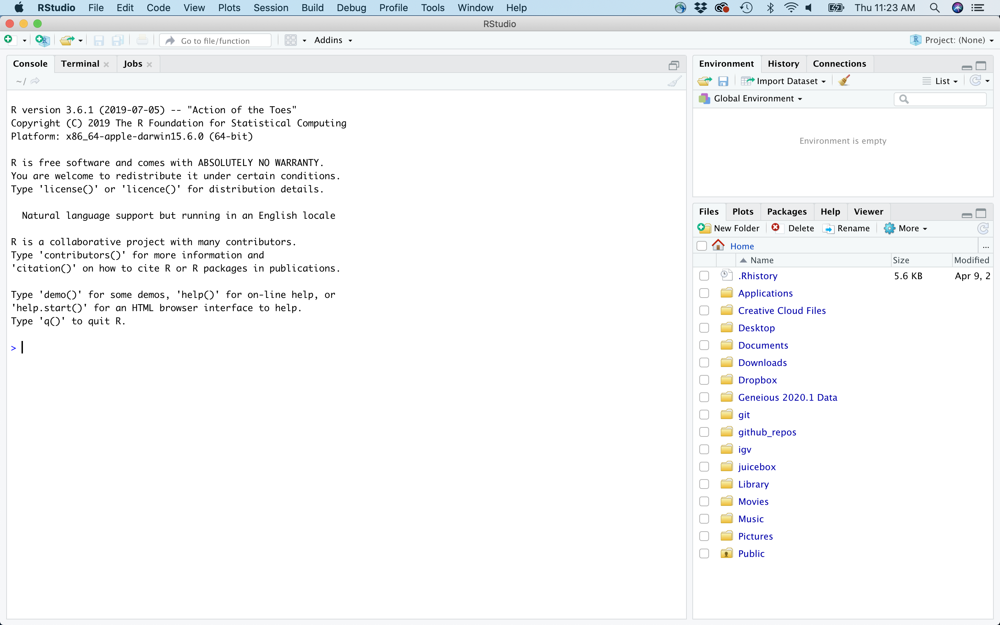
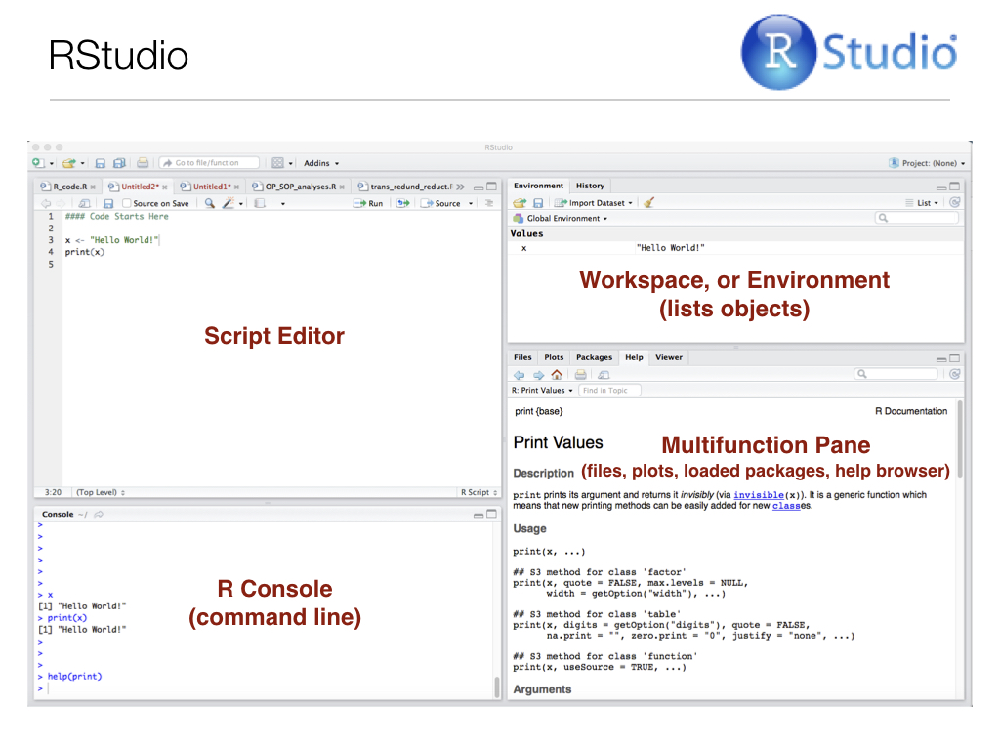

Chapter 6 An Introduction to the R language
6.1 Background
R is a computer programming language and environment especially useful for graphic visualization and statistical analysis of data. It is an offshoot of a language developed in 1976 at Bell Laboratories called S. R is an interpreted language, meaning that every time code is run it must be translated to machine language by the R interpreter, as opposed to being compiled prior to running. R is the premier computational platform for statistical analysis thanks to its GNU open-source status and countless packages contributed by diverse members of the scientific community.
6.2 Why use R?
- Good general scripting tool for statistics and mathematics
- Powerful and flexible and free
- Runs on all computer platforms
- New packages released all the time
- Superb data management & graphics capabilities
- Reproducibility - can keep your scripts to see exactly what was done
- Can embed your
Ranalyses in dynamic, polished files using R markdown - You can write your own functions
- Lots of online help available
- Can use a nice IDE such as
RStudio
6.3 Important R terms and definitions
Alt text
From Logan, M. 2010. Biostatistical Design and Analysis Using R
Operators are symbols in programming that have a specific meaning
Alt text
From Logan, M. 2010. Biostatistical Design and Analysis Using R
6.4 Getting started with R via the RStudio Environment
To begin working with R, open RStudio. You should first see something that looks like this:

To open a new script editor (where you will keep track of your code and notes), go to File > New File > R Script. Note that there are other options for file types, which we will be using in the future. For now, though, we want a plain script, which when saved will have the extention .R.
It is easy to run code directly from the script editor. For single lines of code, simply make sure your cursor is on that line, and hit Ctrl-Enter. For multiple lines, highlight the block of code you want to run and hit Ctrl-Enter.
Now your display should look somehting like below (but without the red pane labels, of course): 
Note that you can also type commands directly from the command line using the R Console (lower left pane), and the R interpreter will run them when you press Enter.
Any objects you define, and a summary of their values, will appear in the upper right pane, and the lower right pane differs in appearance depending on instructions you provide to R Studio. For instance, if you produce a plot, it will appear there by default. Another extremely important feature of R functions (we’ll get to them in a bit) is the help file. Recall from Chapter 5 our discussion of man pages for UNIX programs. Help files the equivalent for R functions. They contain almost everything you need to know about a given function, and most of them even include and example at the bottom. These help files will appear in the lower right RStudio pane when you call them, for example when you run help(function_name) at the R Console.
6.4.1 R Programming Basics
For the code examples below, it might be useful for you to start your own RStudio session, open a new .R file and type/run code while reading.
- Commands can be submitted through the terminal, console or scripts
- In your scripts, anything that follows
#symbol (aka hash) is just for humans - Notice on these slides I’m evaluating the code chunks and showing output
- The output is shown here after the two
#symbols and the number of output items is in[] - Also notice that
Rfollows the normal priority of mathematical evaluation
## [1] 16## [1] 166.4.1.1 A note on R Markdown
This format provides a much better way to embed code and output, in an easily readable, reproducible manner. We will dive into R Markdown next week, so for now just be aware that it exists.
You can insert
Rchunks intoRmarkdowndocuments
6.4.1.2 Assigning Variables
To “store” information for later use, like the arithmetic operation above, we can assign variables in
R.Variables are assigned values using the
<-operator.Variable names must begin with a letter, and should not contain spaces or
Roperators (see above) but other than that, just about anything goes.Do keep in mind that
Ris case sensitive.
## [1] 6## [1] 4These do not work
6.4.1.3 Arithmetic operations with functions
Arithmetic operations can be used with functions as well as numbers.
Try the following, and then your own.
Note that the last of these -
log()- is a built in function ofR, and therefore the argument for the function (in this case “x” or “x+1”) needs to be put in parentheses.These parentheses will be important, and we’ll come back to them later when we add other arguments after the object in the parentheses.
The outcome of calculations can be assigned to new variables as well, and the results can be checked using the
print()function.
## [1] 67## [1] 690228646.4.1.4 Strings
- Assignments and operations can be performed on characters as well.
Note that characters need to be set off by quotation marks to differentiate them from numeric objects.
- The c(function) stands for ‘concatenate’.
Note that we are using the same variable names as we did previously, which means that we’re overwriting our previous assignment.
A good general rule is to use new names for each variable, and make them short but still descriptive
## [1] "I Love"## [1] "Biostatistics"## [1] "I Love" "Biostatistics"The variable z is now a vector of character objects.
6.4.1.5 Factors
Sometimes we would like to treat character objects as if they were units for subsequent calculations.
These are called factors, and we can redefine our character object as one of class factor.
This might seem a bit strange, but it’s important for statistical analyses where we might want to calculate the mean or variance for two different treatments. In that case the two different treatments would be coded as two different “levels” of a factor we designate in our metadata. This will become clear when we get into hypothesis testing in
R.
Note that factor levels are reported alphabetically. I used the class() function to ask R what type of object “z_factor” is. class() is one of the most important tools at your disposal. Often times you can debug your code simply by changing the class of an object. Because functions are written to work with specific classes, changing the class of a given object is crucial in many cases.
6.4.1.6 Vectors
In general R thinks in terms of vectors (a list of characters factors or numerical values) and it will benefit any R user to try to write programs with that in mind.
R operations, and therefore functions, are vectorized.
This means an operation or function will be performed for each element in a vector.
Vectors can be assigned directly using the ‘c()’ function and then entering the exact values.
## [1] 2 3 4 2 1 2 4 5 10 8 9## [1] 3 4 5 3 2 3 5 6 11 9 10Creating vectors of new data by entering it by hand can be a drag.
However, it is also very easy to use functions such as
seq()andsample().Try the examples below. Can you figure out what the three arguments in the parentheses mean?
Within reason, try varying the arguments to see what happens
## [1] 0.0 0.1 0.2 0.3 0.4 0.5 0.6 0.7 0.8 0.9 1.0 1.1 1.2 1.3 1.4
## [16] 1.5 1.6 1.7 1.8 1.9 2.0 2.1 2.2 2.3 2.4 2.5 2.6 2.7 2.8 2.9
## [31] 3.0 3.1 3.2 3.3 3.4 3.5 3.6 3.7 3.8 3.9 4.0 4.1 4.2 4.3 4.4
## [46] 4.5 4.6 4.7 4.8 4.9 5.0 5.1 5.2 5.3 5.4 5.5 5.6 5.7 5.8 5.9
## [61] 6.0 6.1 6.2 6.3 6.4 6.5 6.6 6.7 6.8 6.9 7.0 7.1 7.2 7.3 7.4
## [76] 7.5 7.6 7.7 7.8 7.9 8.0 8.1 8.2 8.3 8.4 8.5 8.6 8.7 8.8 8.9
## [91] 9.0 9.1 9.2 9.3 9.4 9.5 9.6 9.7 9.8 9.9 10.0## [1] 10.0 9.9 9.8 9.7 9.6 9.5 9.4 9.3 9.2 9.1 9.0 8.9 8.8 8.7 8.6
## [16] 8.5 8.4 8.3 8.2 8.1 8.0 7.9 7.8 7.7 7.6 7.5 7.4 7.3 7.2 7.1
## [31] 7.0 6.9 6.8 6.7 6.6 6.5 6.4 6.3 6.2 6.1 6.0 5.9 5.8 5.7 5.6
## [46] 5.5 5.4 5.3 5.2 5.1 5.0 4.9 4.8 4.7 4.6 4.5 4.4 4.3 4.2 4.1
## [61] 4.0 3.9 3.8 3.7 3.6 3.5 3.4 3.3 3.2 3.1 3.0 2.9 2.8 2.7 2.6
## [76] 2.5 2.4 2.3 2.2 2.1 2.0 1.9 1.8 1.7 1.6 1.5 1.4 1.3 1.2 1.1
## [91] 1.0 0.9 0.8 0.7 0.6 0.5 0.4 0.3 0.2 0.1 0.0## [1] 100.00 98.01 96.04 94.09 92.16 90.25 88.36 86.49 84.64 82.81
## [11] 81.00 79.21 77.44 75.69 73.96 72.25 70.56 68.89 67.24 65.61
## [21] 64.00 62.41 60.84 59.29 57.76 56.25 54.76 53.29 51.84 50.41
## [31] 49.00 47.61 46.24 44.89 43.56 42.25 40.96 39.69 38.44 37.21
## [41] 36.00 34.81 33.64 32.49 31.36 30.25 29.16 28.09 27.04 26.01
## [51] 25.00 24.01 23.04 22.09 21.16 20.25 19.36 18.49 17.64 16.81
## [61] 16.00 15.21 14.44 13.69 12.96 12.25 11.56 10.89 10.24 9.61
## [71] 9.00 8.41 7.84 7.29 6.76 6.25 5.76 5.29 4.84 4.41
## [81] 4.00 3.61 3.24 2.89 2.56 2.25 1.96 1.69 1.44 1.21
## [91] 1.00 0.81 0.64 0.49 0.36 0.25 0.16 0.09 0.04 0.01
## [101] 0.00## [1] 100.00 98.01 96.04 94.09 92.16 90.25 88.36 86.49 84.64 82.81
## [11] 81.00 79.21 77.44 75.69 73.96 72.25 70.56 68.89 67.24 65.61
## [21] 64.00 62.41 60.84 59.29 57.76 56.25 54.76 53.29 51.84 50.41
## [31] 49.00 47.61 46.24 44.89 43.56 42.25 40.96 39.69 38.44 37.21
## [41] 36.00 34.81 33.64 32.49 31.36 30.25 29.16 28.09 27.04 26.01
## [51] 25.00 24.01 23.04 22.09 21.16 20.25 19.36 18.49 17.64 16.81
## [61] 16.00 15.21 14.44 13.69 12.96 12.25 11.56 10.89 10.24 9.61
## [71] 9.00 8.41 7.84 7.29 6.76 6.25 5.76 5.29 4.84 4.41
## [81] 4.00 3.61 3.24 2.89 2.56 2.25 1.96 1.69 1.44 1.21
## [91] 1.00 0.81 0.64 0.49 0.36 0.25 0.16 0.09 0.04 0.01
## [101] 0.00Here is a way to create your own data sets that are random samples.
Again, on your own, play around with the arguments in the parentheses to see what happens.

You’ve probably figured out that “y” from the last example is a draw of numbers with equal probability (what we call a flat, or uniform distribution).
What if you want to draw from a distribution?
Again, play around with the arguments in the parentheses to see what happens.
## [1] 47.0311117 169.3228445 33.4992472 -194.0313433 -91.0336764
## [6] 153.0808638 -37.2211595 204.2386580 122.7248347 -166.7279077
## [11] -24.7107422 120.4556900 32.5275848 92.6766359 -271.6368257
## [16] 26.4656870 19.9124902 46.9581730 87.3906719 6.3541598
## [21] 92.9334045 -74.2442273 30.5705680 -44.0360526 19.1794940
## [26] -1.2508374 59.8923053 -85.5396771 26.6351468 -60.4863567
## [31] 22.9476216 -157.5754876 -8.4223002 22.8814222 -154.3546998
## [36] -34.5614833 78.9129667 56.4139220 51.8628382 47.1737840
## [41] -25.6634703 36.1695704 123.6330257 72.5447201 -3.0188333
## [46] 86.1454517 -64.1739475 -195.8288846 -48.9802659 -142.0519598
## [51] 44.9685075 -24.1728554 -50.7440121 122.3065234 -92.8246349
## [56] 31.8056538 -58.0647052 -159.0107229 126.3881627 23.5622782
## [61] 77.6950099 26.4456758 -8.2756705 11.7922009 67.0870656
## [66] -15.7497347 -19.1174788 -54.0280682 100.5817192 -71.8090585
## [71] 10.7065244 -37.8950094 63.8907121 -80.4305703 87.2760481
## [76] -46.8581375 -68.9225977 -68.4110128 66.6093307 140.5335852
## [81] -170.5789828 164.7815939 -1.9995917 14.9549400 84.8553673
## [86] -85.1247405 -253.3011656 58.3470269 215.6687371 -2.2813569
## [91] 15.2387413 -30.3428597 127.3048106 2.4697232 218.9458279
## [96] -26.6008006 129.5022890 -32.6460839 -123.8368379 86.5023486
## [101] -16.5637017 139.1318112 -118.1994534 -71.5729791 -28.6279015
## [106] 20.0832280 49.7924144 0.1649285 -123.2550528 149.2327474
## [111] 34.3443242 -85.1611516 78.8960148 30.7205342 102.2983838
## [116] -106.7727190 166.5183615 119.7694406 98.8165580 -61.3975659
## [121] 151.3869764 19.1126228 -46.8291031 -201.0092944 110.2077290
## [126] 63.1174713 -214.8315572 -7.8416921 24.9419536 124.1787476
## [131] 53.2523480 -25.8227922 10.5738947 -33.6874744 51.4904121
## [136] -106.1316307 -60.6195030 -74.6964280 -92.8906549 121.0327226
## [141] 78.5718506 214.8285255 73.6169797 106.7872421 32.4691523
## [146] -14.6201624 -13.8940290 104.2590273 148.9236054 -40.7298346
## [151] 77.5574970 -71.1052520 -84.2376400 151.3147246 90.0168966
## [156] -52.3932761 68.6408850 27.1999001 9.7243594 56.6563037
## [161] 112.8091495 43.9194735 23.7185506 59.6592799 119.7414676
## [166] 104.6457762 154.1999285 70.1647033 67.8769695 49.3392836
## [171] -166.2494261 -84.5968708 8.1810041 129.9710996 123.9190979
## [176] -51.7174930 64.0150250 32.4701279 -19.6552518 46.6059149
## [181] -54.9659680 -34.4428129 67.7938475 66.4166590 -140.7118523
## [186] -34.2969424 -48.5530928 -93.5181357 -130.7732341 108.7702808
## [191] -42.9375059 274.2646500 -14.1983056 111.1350670 164.6377821
## [196] 51.8347353 77.1329435 -46.8089485 61.6780781 -107.9293716
## [201] -150.0217644 44.6385386 143.3903921 -149.0820920 42.1656779
## [206] -84.5882339 -126.2834013 -29.1399774 76.5272890 -195.5008262
## [211] -87.7499135 120.2412381 141.3918780 169.4877697 43.6748736
## [216] -71.5139230 -87.7611874 173.3726800 65.5223240 44.7939475
## [221] -155.9659291 -103.6375470 39.5129998 -154.5787475 -131.5559780
## [226] -158.7614820 -46.7222386 -70.0230940 279.7121134 97.8593758
## [231] 266.8042487 162.1181868 -6.8601054 -173.4327885 -66.1698012
## [236] -66.5329978 -35.8939311 132.2645809 -59.5311692 -97.6180699
## [241] 221.9886333 187.9672293 53.2291419 -18.6710786 120.8519763
## [246] 93.7851395 51.9589880 -108.2107837 231.7924105 47.9273480
## [251] -80.7819015 77.0523939 -94.8149538 -116.9207449 -90.9346174
## [256] 111.0970134 25.0873091 12.0203896 -70.4224486 -44.4928233
## [261] -204.0483555 171.9176183 120.0018128 17.6615599 -81.6193382
## [266] 161.1741025 -59.2374082 222.2995731 77.2538815 64.5049593
## [271] 124.9144484 -112.7018837 -333.9309674 -73.7434715 -114.2420673
## [276] 96.4784879 215.9108962 2.6631720 80.4218187 35.2519130
## [281] -39.5741077 -49.5752527 -1.5506909 -46.0292363 -181.0357186
## [286] 34.0482428 33.9702046 193.0716504 78.7809223 -146.6961173
## [291] 110.2201635 -39.7470190 26.7919148 -98.0705366 5.1378276
## [296] -21.3499564 -28.0923453 -202.4357089 136.4944183 -56.5466294
## [301] 77.8996030 -7.5122342 -295.4339983 -87.3425624 51.3030154
## [306] -3.0259776 42.1664177 4.1847500 -104.3333126 49.3124548
## [311] -32.8773320 104.0894651 14.1223204 -52.0422888 155.9339630
## [316] 6.8976131 -114.2443533 208.5805794 -93.4843129 -48.6855312
## [321] -112.6273977 -83.1900663 102.1354838 43.4008110 65.7492426
## [326] 16.6434378 -17.4141419 -42.3249107 38.1671249 -147.9586121
## [331] -49.8524733 18.1347889 -57.4750031 -10.7876785 61.9005401
## [336] -84.9942010 207.7667746 86.5576635 -131.3713322 -17.9579407
## [341] 55.0744251 129.7851351 -183.8063955 -103.8347656 138.5499042
## [346] 9.7049013 72.2172927 -171.7981950 75.9975784 -152.3332540
## [351] -123.9896037 -183.0607470 -223.7457867 -99.2295020 113.0178931
## [356] 193.8557284 178.2471131 -126.3857561 -46.5980221 -115.7766521
## [361] -43.5690361 -92.8951466 -56.0914784 -82.5777321 45.9894347
## [366] -120.8198877 -71.8084588 51.0683081 78.1065364 67.9529251
## [371] -116.4838069 -144.3348765 -152.7044628 0.4042914 -86.4782490
## [376] -13.8411132 91.4435503 98.8298285 -27.3717440 -49.5952735
## [381] 86.0214813 138.9325932 241.8411082 46.7145495 -111.8569394
## [386] -81.9595633 109.2582816 -70.3762957 100.0737442 13.4626923
## [391] -157.7673701 44.0121104 52.0019372 153.6598149 -9.0358851
## [396] 182.3433334 -13.6137101 7.9067134 -91.3922972 -71.2554722
## [401] -6.9304493 191.8874260 -83.1243515 -63.5792596 -124.2000714
## [406] 162.7367892 5.4152474 -219.1576789 -18.4626083 7.4166764
## [411] -55.5626349 -172.0682861 76.4036580 -9.3116117 -28.7010218
## [416] 79.3010163 66.9367008 132.6069769 132.0735174 90.4087943
## [421] 109.6034023 -20.9887355 -28.9712326 106.6667217 -105.6218515
## [426] 12.4915777 -86.7133430 -26.3675120 56.8661792 81.0653960
## [431] -158.0326808 -31.3789072 -298.7997588 -17.2882413 -4.3940369
## [436] -91.7421631 96.7123009 76.4322531 -63.0087325 4.1039961
## [441] 106.7784056 117.9223808 -205.2245984 -34.5281444 -20.7938128
## [446] -48.4682009 -137.3087181 -23.2653584 -55.5596525 122.4491588
## [451] 8.5349133 -21.1118446 94.6287699 -55.3780930 156.2959001
## [456] -83.4357285 -157.2796105 179.8119973 130.7007860 33.1344783
## [461] -32.0980961 -32.9181647 67.4946476 38.6009455 -150.1940835
## [466] -65.0260604 -47.0022828 -191.7576353 -46.5180311 -83.3942017
## [471] 98.3488574 21.7781480 -50.8438811 -23.6254008 -69.3674140
## [476] -127.2052512 -112.9686215 -98.0793198 31.5609886 185.3265761
## [481] -59.4792695 156.3794543 -23.9741175 22.8803769 -49.6211220
## [486] -110.3384014 49.7169006 20.8491013 120.7166907 -55.2838147
## [491] -133.9734260 137.9386126 -70.2179579 83.1343628 -55.2991031
## [496] -0.6266606 1.8117317 -53.2634141 98.0100416 -12.5337168
## [501] 61.7647326 -31.8247485 -57.8392617 -107.0608226 9.8732101
## [506] -2.7642904 -39.7585261 6.6810806 -30.1574442 89.1745264
## [511] -32.2728206 111.0859230 135.1797424 109.5537319 -65.5963806
## [516] 1.0486158 27.7460220 -115.0952695 21.8922340 -29.5546192
## [521] -22.0727194 40.0949500 -17.6164162 84.1628168 -250.2734022
## [526] 75.7996927 -46.3191962 22.5311737 -5.2122325 67.8213529
## [531] 22.9258140 -2.4493388 65.9852397 -33.7205321 -24.6850460
## [536] 52.7137028 -64.8720409 -39.4939312 63.1242114 156.4526143
## [541] 36.5781199 9.0359299 -69.3852873 -52.0116854 -29.7099873
## [546] -67.0424541 -85.8057203 -16.1255866 -97.9973841 91.3682961
## [551] -49.3860469 -108.4772578 59.6972635 -127.4586318 46.3292460
## [556] 81.0802522 -54.3415153 114.1549234 47.6898684 -92.3633458
## [561] 26.9450079 114.9433599 -30.3986505 -104.7727443 92.3659050
## [566] -51.8875892 -31.1799650 -12.5184595 -73.6808921 -30.5156659
## [571] -6.6291471 -131.6170901 -28.9111935 -83.1398507 70.6409408
## [576] 1.7938676 105.0264046 -227.8905271 104.3899042 30.5797595
## [581] -10.6865951 42.4546063 -100.3870130 -100.8202720 252.7952450
## [586] -49.2356684 201.7678754 -39.1122612 9.0803694 -219.1240912
## [591] -96.2643351 81.5128255 -99.2023023 -148.7785591 19.2635886
## [596] 124.7197042 -37.2259992 -2.2622528 65.0727105 -40.4248507
## [601] 148.8839921 6.3375222 4.9414984 -0.2391232 -205.3181117
## [606] 143.5941904 37.7793523 -136.4436646 -96.8623081 -91.4833880
## [611] -71.5702231 -15.6090123 137.6023059 -31.2885674 -100.3631903
## [616] 117.3256779 47.1731273 -106.1075918 -36.5279148 6.6458827
## [621] -144.5975446 53.0889193 -63.5799924 -60.4490357 63.2629562
## [626] -102.3393018 75.5280206 64.0792584 94.2943991 136.0098554
## [631] -3.4576969 80.9225175 14.0088518 48.9976076 -99.3186937
## [636] 151.3079885 173.7145694 -104.1189356 75.6487912 63.5017120
## [641] -140.1826659 -8.0002847 -46.1175914 -37.0911076 -94.8429717
## [646] -95.3201717 152.1293376 0.7117377 -56.5593595 96.6744818
## [651] 3.5545086 15.2511541 -32.4095208 -91.5150643 185.7088786
## [656] 62.5850752 130.8633918 46.1249566 -27.1560431 89.2218016
## [661] -62.2874097 78.1342466 -30.2153996 -87.0135183 19.8948018
## [666] 1.5827337 -37.3170177 32.2009371 59.8082803 123.8229740
## [671] -214.6842456 3.0024829 112.9338735 72.6460955 -121.6148303
## [676] -46.3363142 -21.0988602 -51.3670465 6.7676288 -45.4738626
## [681] -149.5171172 52.8879964 -7.8440758 -55.6160228 28.7697002
## [686] -41.1570280 19.3050348 -56.7875385 -75.7830177 48.6265506
## [691] 31.2660409 -210.5236284 256.7264711 9.7074133 -159.4294973
## [696] 25.1237299 -99.5258799 -57.7219269 -7.3197626 36.9228857
## [701] -174.4332631 25.8935800 -137.4109065 -118.3284581 -172.7106906
## [706] 116.9493541 -103.7355056 -160.1529296 99.3066324 -70.5177622
## [711] 115.4956225 -49.4090617 -36.6662178 131.5428737 90.2730301
## [716] 237.9720564 -145.6206612 -96.4299844 41.3650835 -18.0945346
## [721] 31.6125666 -88.8862731 125.7202931 14.9452249 -55.4591497
## [726] -47.5825677 136.8411478 87.0165487 -33.6939049 -270.9960471
## [731] 160.1560876 83.8987930 30.7822590 69.9264071 96.4709655
## [736] 49.6073750 -101.8977102 -48.2920041 0.2216068 -3.1023898
## [741] -48.4386880 130.4948139 127.9998132 6.1883658 0.4237797
## [746] -56.2521050 -121.4021165 123.5076205 86.2487528 -5.1667995
## [751] 111.7079755 15.2740842 65.9134772 -131.5651012 152.1151218
## [756] -130.7953936 56.0727122 -58.5845951 -54.8867233 159.6027212
## [761] 119.5661319 76.1500069 71.0281802 44.6655229 128.8987856
## [766] 98.7755478 3.5576184 -110.8836474 5.2449388 -2.8721739
## [771] -22.4572808 -211.4131745 81.9234948 -19.7572247 -95.1601658
## [776] 64.5588360 43.1727820 -26.4190779 -101.7060287 -223.9471359
## [781] -40.9209575 -33.7745818 74.1933234 -114.2209007 -69.3312525
## [786] 37.1522832 37.5042733 -222.5764871 -61.9603622 -0.3358943
## [791] -45.7715530 -110.4336348 -2.3509331 -42.5964987 -163.8093909
## [796] 114.8946516 -84.9674285 -156.1298123 42.8475455 40.8952987
## [801] -39.6367188 -78.7930542 -125.4403603 -28.3086780 74.2391049
## [806] 121.1415491 -50.7438714 -100.1277928 15.6985865 145.9411086
## [811] -79.0367730 -8.3330768 158.6837924 13.6287098 -20.2359815
## [816] 146.8401018 -10.0456865 9.7214332 140.4063691 -19.0084702
## [821] -79.9776744 -232.1208009 38.5324720 -115.5800606 193.1012525
## [826] -4.6975056 17.2290819 -20.2522069 40.8680046 -31.9996137
## [831] 120.9333413 -25.2064873 43.1702337 -14.6351929 70.7369545
## [836] 5.8735213 -74.9546699 -67.0620737 -0.5488194 35.0347923
## [841] 58.0883185 126.4604212 -32.6867226 -88.9624477 15.0774141
## [846] 97.4379141 -67.3958125 -130.8307062 134.7577535 -74.3675724
## [851] 208.2492595 -49.3503273 179.9688855 -4.2451860 -54.2996766
## [856] -18.9642246 -31.6220918 57.0793290 104.8630775 -99.1648849
## [861] 69.7838893 86.2517709 -76.6263746 33.8398334 105.7096958
## [866] 85.7658304 -85.1473425 47.8704788 -85.1587497 -100.7684414
## [871] 77.1203051 64.3392571 -47.8400563 -44.0277173 -288.9885578
## [876] -47.6165087 -48.2975989 -173.7626056 164.5038597 153.4380842
## [881] -114.5214612 -67.1541186 175.8310896 -3.7581248 -83.6164455
## [886] -268.6505041 1.1655791 122.8651130 26.0418790 -144.5787834
## [891] -7.1969723 -43.1591614 -149.4218274 -25.5986122 -49.5849290
## [896] -30.9839170 -23.2059611 28.1093036 11.1991332 -25.2043644
## [901] 93.7393798 35.5620369 -7.5248568 47.4524244 -82.2184403
## [906] -28.6635507 -64.9164565 44.8835302 146.4953523 -14.5697038
## [911] -228.8763620 -171.8616581 -42.6649085 188.0017311 -94.9393109
## [916] 80.7029535 -257.6902285 -96.3864246 200.9325631 -77.4663022
## [921] -247.4031063 -56.7559080 168.0312673 120.1481814 183.6005720
## [926] -18.1693286 -90.7666262 77.7283139 -27.1093244 92.5271108
## [931] -34.1501573 -260.7094126 81.6754329 102.5239092 38.6569572
## [936] 73.8297023 -41.5622123 37.5997516 -19.4129181 4.9016789
## [941] 129.0923946 -51.1535274 -32.8786310 10.1576866 25.5138966
## [946] 124.9308553 61.3481166 74.2291226 -40.1935088 -88.6072350
## [951] 67.2922356 -68.2686113 83.1632199 -219.1124630 -64.6465595
## [956] -53.4048620 60.1788574 4.5247856 -127.7867592 77.8487156
## [961] 181.4427226 42.2186170 -124.8087017 -137.4705892 -51.6019904
## [966] -36.9233648 34.1800701 -70.3501661 -35.8160599 79.1643290
## [971] 157.3872899 114.7682311 -15.4216721 -30.4539956 -39.6303722
## [976] 141.4590816 6.8270094 169.2230736 52.9734382 156.4639328
## [981] 63.7660588 -31.8552923 -61.0146453 98.8623414 -8.5855056
## [986] -132.1042865 34.1937658 59.4954370 -186.5150854 -76.4363283
## [991] 27.3241048 -7.4402080 -24.7371010 6.4999668 117.0990003
## [996] -40.2257368 24.8200685 -149.5206338 50.2263488 -66.9960369

Can you figure out what the three rnorm() arguments represent?
6.4.1.7 Basic Summary Statistics
We will get into the details regarding summary statistics later, but for now, check out several of the R functions that calculate them.
Notice that the last function (
sample) has an argument (replace=T)Arguments simply modify or direct the function in some way
There are many arguments for each function, some of which are defaults
6.4.1.8 Getting help to understand functions
Getting help on any function is very easy - just type a question mark and the name of the function.
There are functions for just about anything within
Rand it is easy enough to write your own functions if none already exist to do what you want to do.In general, function calls have a simple structure: a function name, a set of parentheses and an optional set of arguments you assign parameters to and send to the function.
Help pages exist for all functions that, at a minimum, explain what parameters exist for the function.
Help can be accessed a few ways - try them :
6.5 Exercises associated with this chapter:
- Exercise 2 (file:
rtutorial_1.Rmd)
6.6 Additional learning resources:
Logan, M. 2010. Biostatistical Design and Analysis Using R. - A great intro to R for statistical analysis
http://library.open.oregonstate.edu/computationalbiology/ - O’Neil, S.T. 2017. A Primer for Computational Biology